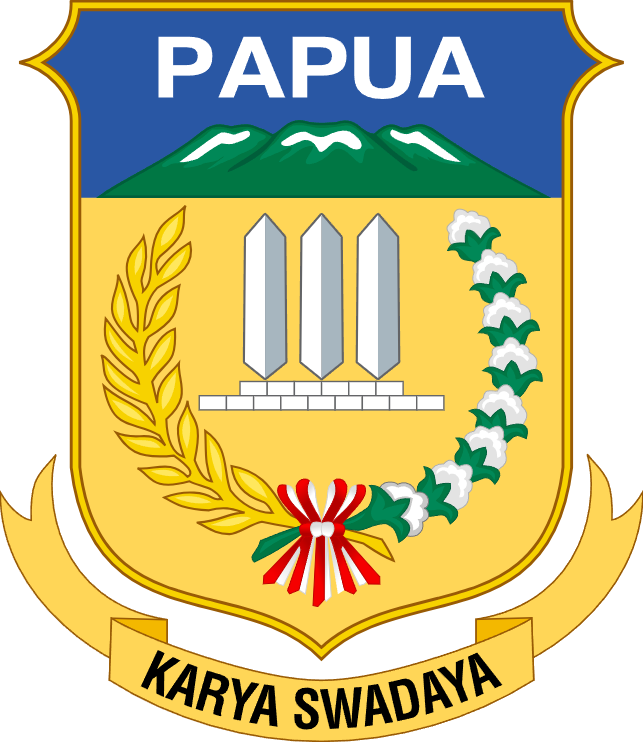
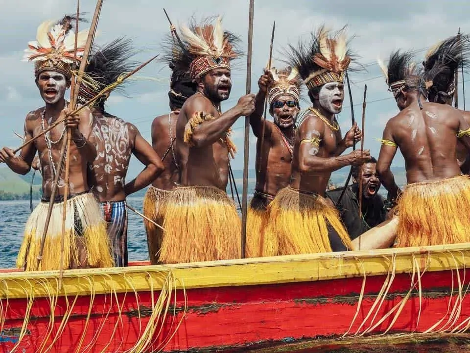
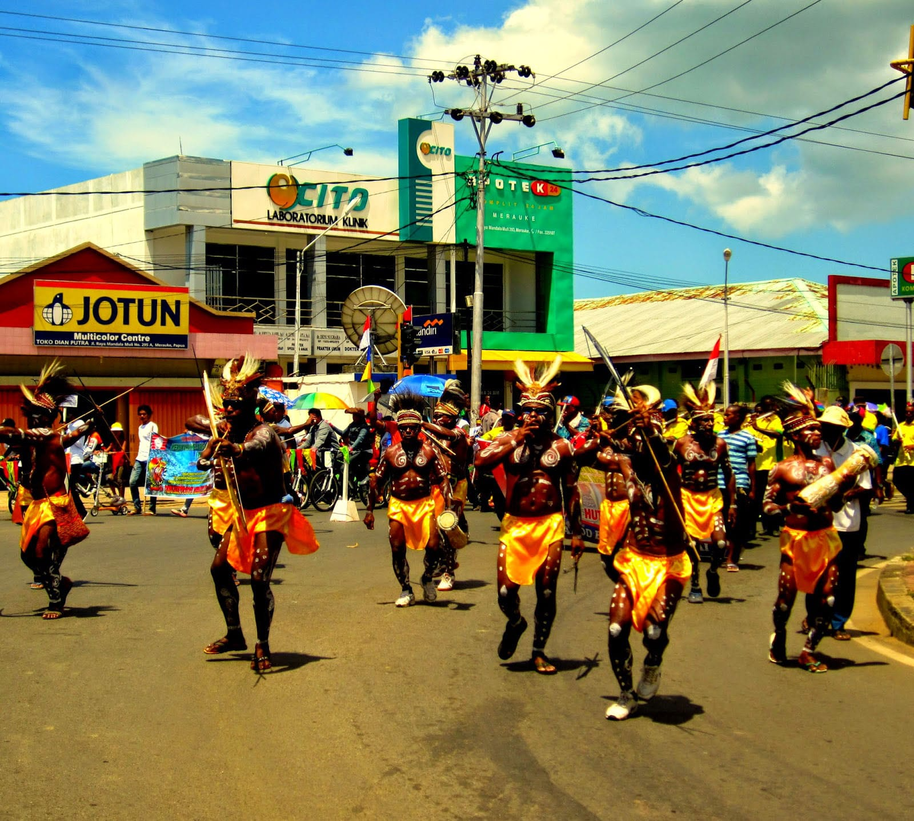
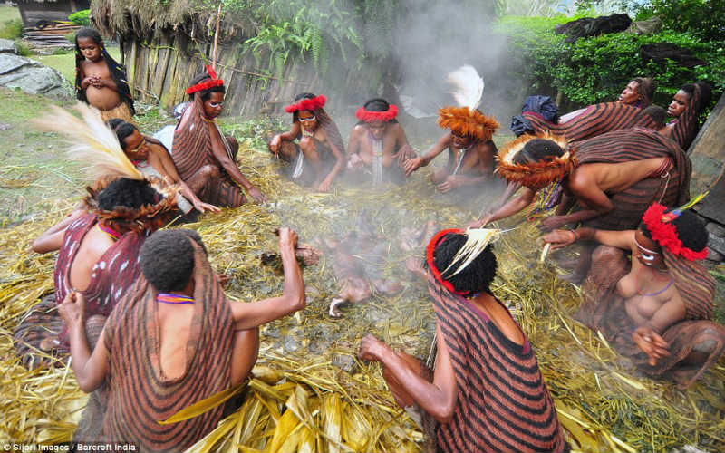
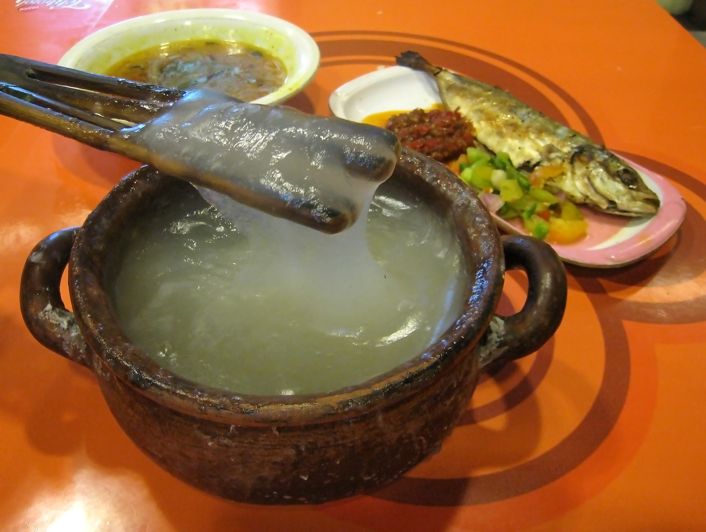
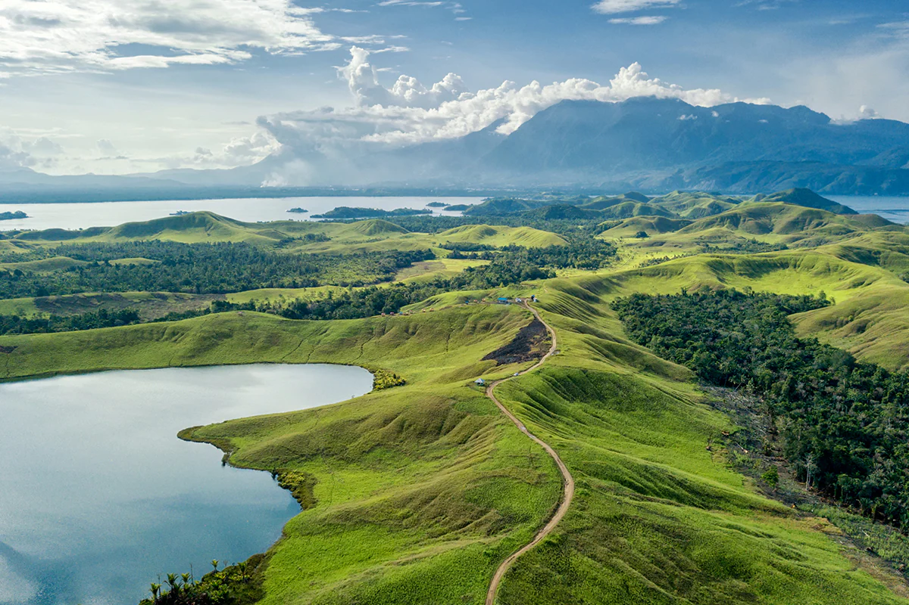

Sumatra
Nusa Tenggara
Maluku
Papua
Papua
Papua (dahulu Irian Barat (1956 – 1973) dan Irian Jaya (1973 – 2000)) adalah provinsi yang terletak di pesisir utara Papua, Indonesia, yang berdiri sejak 1 Mei 1963. Provinsi Papua sebelumnya bernama Irian Barat dan Irian Jaya yang mencakup seluruh Tanah Papua bekas Karesidenan Nugini Barat. Ibu kota Papua berada di Kota Jayapura, yang berbatasan langsung dengan negara Papua Nugini. Sejak 30 Juni 2022, provinsi Papua dimekarkan, yang membentuk provinsi baru yakni, Papua Tengah, Papua Pegunungan, serta Papua Selatan.
Informasi Umum
| Nama Provinsi | Kode Wilayah | Kode Internasional | Singkatan Umum | Ibu Kota | Hari Jadi | Lambang |
|---|---|---|---|---|---|---|
| Papua | 91 | ID-PA | - | Jayapura | 27 Desember 1949 |  |
Budaya

Rumah Kariwari adalah salah satu rumah adat khas Papua, lebih tepatnya adalah rumah adat dari Suku Tobati-Enggros yang bermukim di sekitar Teluk Yuotefa dan Danau Sentani, Jayapura. Berbeda dengan bentuk rumah adat Papua lainnya - seperti honai yang berbentuk bulat - rumah Kariwari berbentuk limas segi delapan. Rumah Kariwari biasanya terbuat dari, bambu, kayu besi dan daun sagu hutan. Rumah Kariwari terdiri dari dua lantai dan tiga kamar atau tiga ruangan, dengan fungsi yang masing-masing berbeda. Arsitektur rumah Kariwari juga dianggap sangat khas dan menjadi salah satu simbol penting bagi budaya Papua sehingga menjadi ikonik di anjungan Papua yang terdapat di Taman Mini Indonesia Indah.
Koteka merupakan bagian dari pakaian adat Papua yang berfungsi untuk menutupi kemaluan penduduk pria asli Papua, sementara bagian tubuh lainnya dibiarkan terbuka sehingga nyaris telanjang. Koteka, secara harfiah memiliki makna sebagai pakaian. Koteka juga disebut dengan horim atau bobbe. Koteka terbuat dari bahan kulit labu air yang telah dihilangkan biji dan buahnya. Labu air yang dipilih harus yang sudah tua karena labu yang tua jika dikeringkan mempunyai tekstur yang keras dan awet. Labu tua tersebut ditanam di dalam pasir atau tanah kemudian dibakar agar lebih mudah untuk mengeluarkan biji dan buahnya. Setelah berhasil dikeluarkan biji dan buahnya, labu dikeringkan dengan cara diangin-anginkan di atas perapian.
Tari tradisional masyarakat Papua dapat dikatakan merupakan cerminan jati diri yang harus dipahami oleh semua orang, bukan hanya warga yang tinggal di wilayah Papua saja, Lantas, apa saja tari-tarian tradisional dari Papua? Berikut akan disajikan penjelasan mengenai beberapa tarian tradisional Papua

Tari Awaijale Rilejale adalah tarian tradisional khas masyarakat suku Sentani yang tinggal di daerah Distrik Sentani, Kabupaten Jayapura, Provinsi Papua. Tarian ini menggambarkan keindahan alam Danau Sentani pada waktu senja, saat warganya pulang dari bekerja dengan menaiki perahu.

Tari Det Pok Mbui adalah tarian adat yang berasal dari tiga kecamatan di Kabupaten Merauke, Provinsi Papua, yaitu Agats, Sauwa Ema, dan Pirimapun. Eksistensi awal dari tarian tersebut telah ada sejak Indonesia belum merdeka. Penyebutan nama tari Det Pok Mbui berasal dari dua suku kata, yaitu det yang berarti “topeng yang mirip setan” dan pok mbui yang berarti “pesta” atau “upacara”. Secara keseluruhan, tarian ini memiliki arti “upacara topeng setan”.
Bahasa Melayu Papua adalah bahasa yang dituturkan di Papua, Indonesia. Jumlah penuturnya kini mencapai sekitar 500.000 dan cenderung meningkat. Bahasa Melayu Papua dianggap mirip dengan bahasa Melayu Ambon dan bahasa Melayu Manado.

Upacara adat Papua salah satunya adalah upacara bakar batu. Upacara ini merupakan tradisi, di mana masyarakat Papua melakukan sebuah ritual memasak bersama-sama. Dalam sejarahnya, upacara bakar batu bagi masyarakat di pegunungan tengah Papua merupakan pesat untuk membakar daging babi. Akan tetapi, sebagai bentuk toleransi, saat ini masyarakat Papua tidak harus atau tidak selalu membakar babi, terkadang mereka juga membakar sapi, kambing maupun ayam. Upacara batu bakar dilakukan untuk menyambut berita kebahagiaan seperti dilaksanakannya perkawinan adat, kelahiran, penobatan kepala suku hingga mengumpulkan prajurit ketika akan pergi berperang.
Tombak Tradisional Papua adalah senjata yang biasa digunakan sebagai alat pertempuran dan perburuan. Tombak ini dibuat dari bahan-bahan dasar yang mudah ditemukan di alam, yaitu kayu yang biasa diolah untuk membuat gagang. Sedangkan, bagian mata tombak menggunakan batu kali yang nantinya akan diasah agar semakin tajam. Tombak ini dapat dikatakan spesial karena memiliki aturan tersendiri dalam adat Papua, yaitu tidak diperkenankan untuk menggunakan tombak ini selain untuk berburu atau perang. Dalam adat tradisional di Papua, tombak juga diartikan sebagai lambang dari kegagahan seorang pria.
Tifa adalah alat musik khas Papua. Alat musik ini bentuknya menyerupai kendang dan terbuat dari kayu yang di lubangi tengahnya. Ada beberapa macam jenis alat musik Tifa seperti Tifa Jekir, Tifa Dasar, Tifa Potong, Tifa Jekir Potong dan Tifa Bas. Tifa mirip dengan alat musik gendang yang dimainkan dengan cara dipukul. Alat musik ini terbuat dari sebatang kayu yang dikosongi atau dihilangi isinya dan pada salah satu sisi ujungnya ditutupi, dan biasanya penutupnya digunakan kulit rusa yang telah dikeringkan untuk menghasilkan suara yang bagus dan indah. Bentuknyapun biasanya dibuat dengan ukiran. Setiap suku di Maluku dan Papua memiliki tifa dengan ciri khas nya masing-masing.
Yamko Rambe Yamko adalah suatu lagu daerah yang berasal dari Lembah Grime, yang merupakan wilayah lembah berpenduduk di Kabupaten Jayapura, khususnya merupakan iringan dari tradisi permainan Kasep (Kaseb, Kseep) milik rumpun tiga suku di Lembah Grime, yakni Namblong, Gresi, dan Kemtuk.
Kuliner
Papeda adalah makanan berupa bubur sagu khas papua yang biasanya disajikan dengan ikan tongkol atau mubara yang dibumbui dengan kunyit. Papeda berwarna putih dan bertekstur lengket menyerupai lem dengan rasa yang tawar. Papeda merupakan makanan yang kaya serat, rendah kolesterol dan cukup bernutrisi. Pada umumnya, papeda dikonsumsi bersama dengan ikan tongkol. Namun, papeda dapat juga dikombinasikan dengan ikan gabus, kakap merah, bubara, hingga ikan kue. Selain kuah kuning dan ikan, bubur papeda juga dapat dinikmati dengan sayur ganemo yang diolah dari daun melinjo muda yang ditumis dengan bunga pepaya muda dan cabai merah.
Destinasi Wisata
Danau terbesar di Papua yang memiliki panorama fantastis dan jadi kebanggaan masyarakat lokal, Apalagi kalau bukan Danau Sentani yang terletak di Kabupaten Jayapura. Danau dengan luas 9.360 hektare ini merupakan sumber air dari 14 sungai besar dan sungai kecil. Tak hanya itu, danau ini pun juara dalam produksi ikannya yang bisa mencapai 1.823 ton/tahun, lho! Dengan bentuk danau yang unik seperti amoeba, terdapat 22 pulau kecil yang menghiasi keindahan danau. Enggak heran, kalau Danau Sentani jadi lokasi wisata favorit yang ramai dikunjungi wisatawan.
Danau Kelimutu di bagi menjadi tiga bagian yang sesuai dengan warna - warna yang ada di dalam danau. Danau berwarna biru atau "Tiwu Nuwa Muri Koo Fai" merupakan tempat berkumpulnya jiwa-jiwa muda-mudi yang telah meninggal. Danau yang berwarna merah atau "Tiwu Ata Polo" merupakan tempat berkumpulnya jiwa-jiwa orang yang selama hidupnya selalu melakukan kejahatan dan sekarang telah meninggal. Sedangkan danau berwarna putih atau "Tiwu Ata Mbupu" merupakan tempat berkumpulnya jiwa-jiwa orang tua yang telah meninggal.